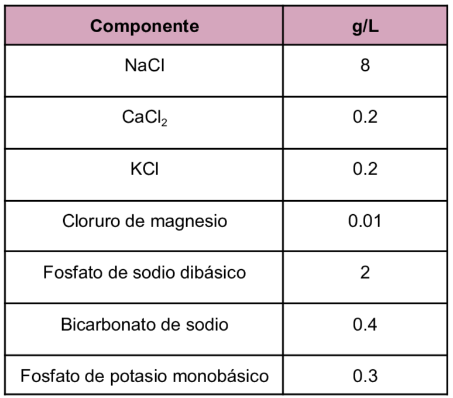

Medio bifásico de tipo xénico que es usado para el aislamiento primario de
Entamoeba
a partir de muestras clínicas fecales.
Composición de Solución de Locke
Medio bifásico de tipo xénico que es usado para el aislamiento primario de
Entamoeba
a partir de muestras clínicas fecales.
Composición de Solución de Locke

Se añade Huevo Emulsionado a la Solución de Locke para la Fase Sólida.
King Saud University (2023) Parasites Culture & Cultivation of Luminal Parasitic Protists. https://faculty.ksu.edu.sa/sites/default/files/Lecture%20%282%29_2.pdf
Diamante,L., Clark, C. & Cunnick, C. (1995) YI-S, a casein-free medium for axenic cultivation of Entamoeba histolytica, related Entamoeba, Giardia intestinalis and Trichomonas vaginalis. https://pubmed.ncbi.nlm.nih.gov/7496385/